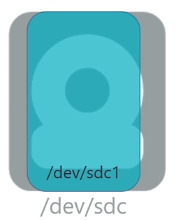
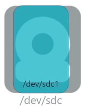
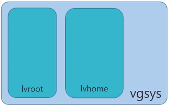
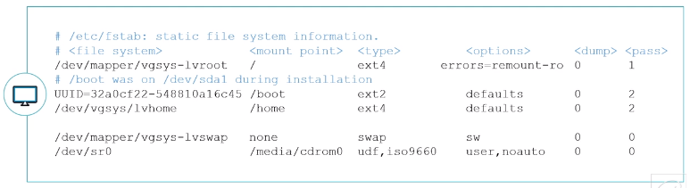
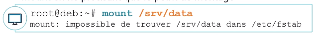

Gestion des espaces de stockage – File System
Objectifs
- Découvrir des systèmes de fichiers Linux
- Appliquer des FS sur l’espace de stockage
- Gérer les systèmes de fichiers
- Monter les systèmes de fichiers
Préparer le stockage à recevoir des données
Considérations générales sur les systèmes de fichiers
- Tous les systèmes de fichiers de type Unix sont basés sur le même principe et les mêmes éléments élémentaires. Les systèmes de fichiers Unix sont segmentés en blocs de données, actuellement à 4 Ko par défaut
- Chaque bloc pourra avoir différentes structures :
- Superbloc : bloc contenant les informations vitales du système de fichiers
- Inode : bloc contenant les inodes contenant les informations d’un fichier
- Bloc d’indirection : bloc redirigeant vers d’autres blocs (cf. plus loin dans ce chapitre)
- Bloc de données : bloc contenant les données réelles du fichier
- Table des inodes : bloc contenant la liste des blocs d’inodes
- Table des inodes libres : bloc contenant la liste des inodes libres
- Table des blocs libres : bloc contenant la liste des blocs de données libres
Le Superbloc
- Le superbloc contient les informations vitales du système de fichiers. Donc par mesure de sécurité, il est dupliqué à différents endroits du système de fichiers. Il contient les informations suivantes :
- Taille des blocs
- Taille du système de fichiers
- Nombre de montages effectués
- Nombre maximum de montages avant vérification
- Date de dernier montage
- Intervalle maximum entre deux montages avant vérification
- Un pointeur vers l’inode racine du système de fichier
Inodes et bloc d’indirection
- Les inodes sont regroupés par bloc dans un système de fichiers. La taille d’un inode est de 128 octets. Avec des blocs de 4 Ko, il y aura 32 inodes par bloc d’inodes. Un inode contient des informations propres au fichier qu’il représente :
- Type de fichier : -,d,b,c,l,p,s
- Mode ou droit d’accès : en octal, ex : 0644 (rw-r--r--)
- Nombre de liens physiques : si la valeur tombe à zéro, le fichier est considéré comme supprimé.
- UID : propriétaire
- GID : groupe propriétaire
Inodes et bloc d’indirection
- Taille du fichier : en octets
- Champs date : atime (dernier accès au fichier), ctime (dernier changement des informations de l’inode), mtime (dernier changement de données réelles du fichier)
- 15 adresses : pointant vers les blocs de données réelles du fichier
L’inode ne possède pas le nom du fichier, celui-ci est renseigné dans le répertoire contenant ce fichier.
Systèmes de fichiers Linux
Systèmes de fichiers EXT
- L’
ext2, l’ext3et l’ext4sont implémentés sur un système Debian - La différence entre
ext2etext3est la journalisation, améliorant la récupération du système de fichier en cas de crash (extinction brutale du PC par exemple) - Le système de fichier
ext4est une amélioration de l’ext3mais réécrit de zéro ext4est le système de fichier par défaut sur Debian 10.- Son avantage est qu’il est peu sujet à la fragmentation grâce à la préallocation des blocs de données contigus
Caractéristiques :
- Taille maximale de fichier : 16 Tio (avec des blocs de 4 Ko)
- Nombre maximal de fichiers : 4 milliards
- Taille maximale du nom de fichier : 255 octets
-
Taille maximale de volume : 1 Eio (limité à 16 Tio par e2fsprogs avec des blocs de 4 Ko)
-
D’autres systèmes de fichiers sont gérés sous Debian, entre autres : NTFS, FAT
- Il est bien sûr possible d’installer d’autres outils de gestion de systèmes de fichiers comme XFS, Btrfs, etc.
Outils de gestion des systèmes de fichiers
Création de systèmes de fichiers
- Le formatage va installer sur un périphérique de stockage un système de fichier. Sans un système de fichier, le périphérique de stockage est inutilisable
- Un périphérique de stockage peut être une partition (ex:
/dev/sdc1) ou un volume logique (ex :/dev/vgsys/lvroot ou /dev/mapper/vgsys-lvhome)
Dans un volume classique
 
 
Dans un groupe de volume
 
mkfs.[fstype] <options> [périphérique de stockage]
mkfs.[fstype]est une commande simplifiant la mémorisation des commandes de création de systèmes de fichiers. C’est en fait une fausse commande qui fait appel à la vraie commande de création
- Exemple :
mkfs.ext4est la commande mke2fs avec des options préconfigurées pour générer de l’ext4 -
Pour savoir quelle est la commande utilisée par un mkfs.
[fstype], il suffit de consulter la commandeman mkfs.[fstype] -
Création d’un système de fichiers
ext4sur partition/dev/sda2
root@deb:~# mkfs.ext4 /dev/sda2
- Création d’un système de fichiers
ext4sur volume logique lv1
root@deb:~# mkfs.ext4 /dev/vggroup1/lv1
- Création d’un système de fichiers
NTFS(nécessite le paquetntfs-3g)
root@deb:~# mkfs.ntfs /dev/sde1
Modification de systèmes de fichiers
tune2fs <options> [périphérique de stockage]
tune2fspermet de modifier des options d’un système de fichiers type ext- Il permet aussi de récupérer les informations du superbloc
- Options usuelles
- -L permet de modifier l’étiquette du système de fichiers
- -l permet d’afficher les informations du superbloc
- -i permet de modifier l’intervalle entre deux vérifications
- -c permet de modifier le nombre maximum de montages déclenchant une vérification
resize2fs <options> [périphérique de stockage]
resize2fspermet de changer la taille d’un système de fichiers
Vérification d’un système de fichiers
fsck.<fstype> <options> [périphérique de stockage]
- La vérification d’un système de fichiers permet de contrôler l’intégrité des données présentes sur celui-ci
- Il est possible de le faire manuellement tout comme il est possible de l’automatiser au démarrage
- Comme pour les commandes de formatage, la vérification peut facilement se faire avec les commandes
fsck.<fstype>
Prise d’information
blkid <options> [périphérique de stockage]
- La commande
blkidpermet d’afficher les informations relatives à un périphérique particulier. Sans argument, elle affichera les informations relatives à tous les périphériques formatés

lsblk <options> [périphérique de stockage]
- La commande
lsblkpermet d’afficher sous forme arborescente les informations relatives aux périphériques et aux systèmes de fichiers
Pour afficher les UUID et LABELS, il faut ajouter l'option -f

Monter des systèmes de fichiers
Montage d’un système de fichiers
- Sous un système d’exploitation Linux, comme tout est fichier, la mise à disposition d’un système de fichier venant d’un espace de stockage (partition, LVM, RAID, etc.) se fera en définissant un répertoire comme point de montage
- Ce point de montage sera le chemin par lequel accéder aux données du système de fichier
- Pour un montage temporaire d’un système de fichiers, il est conseillé d’utiliser le répertoire
/mnt. S’il faut monter plusieurs systèmes de fichiers de façon temporaire, il est possible de créer des sous-répertoires dans/mnt, pour chacun des systèmes de fichiers
Montage manuel avec mount
mount <options> [périphérique source] [/point/de/montage]
- La commande mount permettra de mettre à disposition un système de fichiers dans un répertoire
- Options possibles :
-t [fstype]Détermine le type de système de fichiers à monter-o [option]Permet de définir différentes options séparées par une virgulesync/asyncActive ou non l’utilisation de la mise en tampon en RAM des données avant écriture dans le système de fichiers. (Par défaut :async)
Montage manuel avec mount
- Quelques autres options possibles :
exec/noexecActive la possibilité d’exécuter des fichiers exécutables présents sur le système de fichiers. (Par défaut :exec)ro/rwMonte le système de fichiers en lecture seule ou en lecture/écriture. (Par défaut :rw)suid/nosuidActive la possibilité d’exécuter les binaires avec l’interprétation du SUID positionné dessus. (Par défaut :suid)remountPermet de changer une ou des options de montage sans démonter le système de fichiers.
Cas pratique

mount
La sortie de mount est faiblement lisible mais permet de
savoir facilement les options de montage appliquées
Informations sur les montages
•findmnt permet une meilleure lisibilité et surtout de prendre l’information sur un seul point de montage

Pour voir l’information sur un seul point de montage, il suffit de le cibler :

Démonter un volume
umount [périphérique de stockage]
ou
umount [point de montage]
- À faire par exemple pour retirer une clé USB ou disque externe
- Attention, il ne faudra pas qu’un utilisateur utilise le volume monté pour permettre sa déconnexion.
root@deb:~# umount /mnt
Montage automatique des systèmes de fichiers
Montage automatique
Les montages automatiques sont effectués par systemd au tout début du démarrage du système d’exploitation. La déclaration des montages automatiques est présente dans le fichier /etc/fstab

- La section
<file system>: -
Cette colonne déclare le système à monter. Cette source peut être exprimée de plusieurs façons :
- Via un
UUID, la façon la plus sécurisée mais humainement plus difficile à reconnaître - Via le
LABEL, humainement plus pratique que l’UUID mais il pose un problème en cas de doublon - Via le
chemin du périphérique, on l’utilise principalement pour les LVM car il n’est pas possible d’avoir plusieurs volumes LVM avec le même nom sur un système - Il est fortement déconseillé de l’utiliser pour des partitions (ex :
/dev/sdb1)
- Via un
-
La section
<mount point>: -
Cette colonne déclare le répertoire de montage du système de fichiers
-
La section
<type>: - Cette colonne déclare le type de système de fichiers. Il est possible de mettre
automais cela ralentit le montage des périphériques - La section
<options>: - Cette colonne déclare les options de montage. Il est possible de mettre
defaults - Les options dans defaults sont :
async,nouser,exec,rw,auto,suid,dev - La section
<dump>: - Cette colonne est très faiblement utilisée. Elle correspond à des paramètres de configuration de la commande
dump - La section
<pass>: - Cette section permet de savoir si le système doit analyser l’intégrité du système de fichiers afin de corriger les problèmes avant de le monter. (commande
fsck) - Si la valeur est à
0: pas de vérification, si elle est supérieure à 0 alors le système analysera les systèmes de fichiers (1pour la racine,2pour les autres)
- Afin de garantir la bonne intégration d’une nouvelle ligne dans le fichier /etc/fstab, il est important de la tester avant le redémarrage du poste. Le moyen le plus simple est d’utiliser la commande mount en ne précisant que le point de montage

- Dans cet exemple, la commande indique qu’elle ne trouve pas d’entrée de
/srv/datadans lefstab - Dans le cas où une ligne indique
/srv/datadans le fichierfstabalors le montage se fera par rapport aux différentes déclarations - Si la commande ne renvoie rien, c’est que le montage s’est correctement effectué
Informations sur les systèmes de fichiers
- Nous avons déjà utilisé les commandes informatives suivantes :
• blkidpermet de récupérer les informations sur les disques, partitions et volumes logiques LVM
• lsblk va donner un affichage plus hiérarchisé de ces mêmes informations
• findmnt offre un affichage hiérarchisé des systèmes de
df <options> [/point/de/montage]
- La commande
dfpermet de prendre des informations utiles sur les systèmes de fichiers montés - Options usuelles :
-h: affiche la taille en puissance de 1024 (K,M,G…)-i: affiche les informations sur les inodes

- La commande
ls -lne permet pas de connaître la taille d’un répertoire. En effet, elle remonte juste la taille utilisée par l’inode du répertoire et non son contenu. Pour connaître la taille d’un répertoire, il faut utiliser la commandedu(disk usage)
du <options> [/point/de/montage]
- Options usuelles :
-h: affiche la taille en puissance de 1024 (K,M,G…)-s: n’affiche pas les sous-répertoires mais uniquement le répertoire en argument

Conclusion
- Vous savez créer et manipuler des systèmes de fichiers Linux
- Vous savez monter ceux-ci en manuel
- Vous savez automatiser un montage au démarrage du système d’exploitation